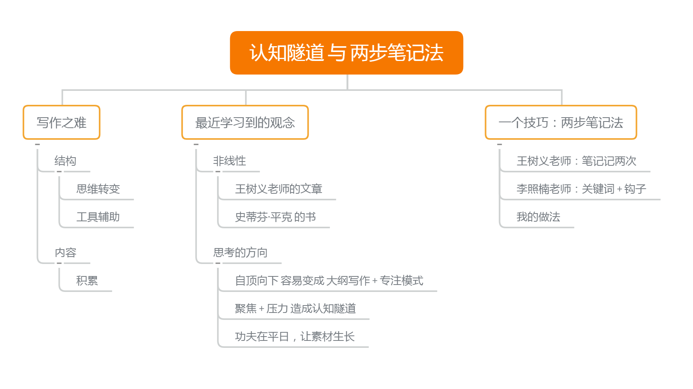

接着聊上次写作的话题，顺便记一个最近学到的，写作和资料整理方面的技巧。
写作之难
我之前写过《写作困难：你是否有类似的烦恼？》，提到写文章时遇到的困难和思考。这是一个大题目，落笔时正处在困惑当中。我希望通过写的过程来让自己想清楚，结果写得很痛苦，最后删删改改，眼看成为时间黑洞，就把当时想到的先写下来结束掉。
那篇里面初步写了两个事情：
结构
思维 和 文本 的结构差异极大，而且想法稍纵即逝。所以我花了很长篇幅，试图通过工具和技巧，去减低难度。仿佛有了神器和窍门，文章就出来了。
内容
可改进了技术，才发现，内容才是最大的困境。不会储存、运输、加工、包装，固然是浪费原材料；但空有一条生产线，没有原料也白搭。对于持续获得有价值的内容，我尚未形成自己的见解。
非线性
后来看到王树义老师的文章（公众号：玉树芝兰）。他在《如何高效写长文？》中，引用 史蒂芬·平克 在《风格感觉》里的话，来解释什么是写作的『非线性』：
写作之难，在于把 网状的思考，用 树状的语法结构，转换成 线性字符串。（“The Web, the Tree, and the String”）。
简单一句话，比我痛苦思考之后的长篇大论要清晰得多。
这个非线性，就是上面说到的，思维 和 文本 的鸿沟。
在认知上，要意识到差异的存在，并且训练自己适应这种转换；同时懂得使用工具去辅助。
内容匮乏
再看到王老师另一篇文章《如何高效实践卡片式写作？》。里面他强调，不要 自顶向下去 填写内容；要让材料 自底向上 地 生长 。
如果此时你手头，已经有了一堆卡片。这些卡片拼在一起，已经可以勾勒出整个文章的版图。那么这篇文章，就基本上可以当做是“生长”出来，而非“生产”出来。
（王老师用卡片积累素材。我从阳志平老师的文章了解过卡片写作法，之前写文章也有提过。目前还在寻找适合自己的工具，时机成熟了再给大家介绍我的实践。）
向下分解？
得益于写代码的经验，我很轻易地意识到写作有 自顶向下 和 自底向上 这两种方式，并在之前的文章中指出。可我的理解是具体写作场景决定方向：
- 平日对一件事积累了各种材料和想法，有一天所有思考在一个点上汇合了，整理成文，就是自底向上。
- 要是命题作文，包括作文、演讲、辩论稿，给定了题目，就只能自顶向下了。
记忆里 自顶向下 的情况占多数。写文章没那么多『恍然大悟』，一方面各种命题作文，另一方面有时为了学一个技能、理解一个知识点，要通过输出特定主题内容，促进学习。
也就是说，多数情况下我们就是 主题 -> 大纲 -> 填写内容 这样的顺序在写东西。 主题 总是先于 素材 进入我们的意识。我们对一个主题有概念之前，接收不到相关的信息，也无法进行有效的思考。
如果从没开过车，在路上你会留意车道导向吗？调头是最左车道还是最右车道？
也许你是老司机，很熟。那你留意过路边的通信基站吗？自行车绿道呢？
这些信息你一定见过，可脑海里没有概念，相关内容只是被忽略的噪音。都能答得上的，大概是一位开车上下班、闲暇喜欢骑行的通信工程师。（不是我，不要对号入座）
外行人要写，只能是拿到命题之后开始留意。自顶向下很自然啊，有什么问题？
认知隧道
《如何高效实践卡片式写作？》点出了关键：先有网再被动填充节点，会造成心理压力，继而造成 认知隧道（cognitive tunnel）。这里王老师说他是引用 采铜老师的笔记（公众号：采铜的创想世界，我没找到出处）：
全部的注意力都聚焦在当下那件紧急的事情上，变得特别狭窄和受限，此时容易忽略全局的信息，看不到整体。
所谓一叶障目，不见森林。这让我想起被 命题作文 支配的恐惧。眼看交卷时间一秒一秒接近，构思的内容就是写不出来；眼看明天就要上台比赛，大半夜讲稿还是挤不出来；眼看马上要出门办事了，文件就是不记得放哪了。
更气人的是，卷子一交，比赛一结束，手续一办完，原本想不通理不顺记不得的东西，突然一下子通了、顺了、记得了。
我知道 认知隧道 是怎么一回事了。
功夫在平日
可前面也说了，自顶向下分解 是情景所迫，并非主动选择。我是这样考虑的：
先有概念，然后才能有意识地 积累素材 和 思考。
可你未必要等拿到命题，才能接触这个主题。
成功的观点输出，很少是事前毫无概念、毫无准备的，更不是单凭拿到命题之后的准备时间，就能完成整张思维网络的构建。哪怕是即兴演讲，成功的输出者，也一定有自己的知识积累。
准备不足，以致作文命题没听过，现场辩题看不懂，来不及查资料和细想，那就只剩下瞎掰一个选项。同样的情况，哪怕准备时间换成一晚，一周，一个月，只要 准备不足 + deadline 的压力把思维逼进墙角，也不过是卡壳和拖延来回切换。（你写过毕业论文吗？）
就好像内存不够的电脑卡顿了，如果因为慌张一顿瞎操作，结果只会更卡。（见过太多人喜欢按刷新。）
你本该对命题范围早有准备，也在之前了解过相关信息，有过思考。临场不过提取之前的积累，进行二次加工。换句话说，我们是把这个现场 向下建立 的 金字塔尖 ，嫁接在之前 早已准备好 的 底座 上，最后导向塔尖上的结论。
只是很多时候，之前的了解和积累、甚至临场的记忆调取都是下意识进行，所以才会觉得成功的命题作文是完全自顶向下写出来的。事实上，根本 不会有人纯粹地向上构建（build up）或向下分解（break down） 。思考是 网状 的，只是 下笔时为了简化 ，才 裁剪成树状逻辑。向上『生长』成文，也需要向下组织内容，和主动检索补充细节；那么向下分解，当然也要用之前『培育』的材料。

本文的结构树
命题作文不可避免，就要在平时准备更多用得上的材料，把『底座』准备得更坚实，这样才能把临场构造的工作量最小化，尽量限定在 结构调整 和 语言润色 的范围内。
试想『小学生应不应该使用智能手机』的讨论，对 小学生 和 智能手机 有概念的普通人，都能简单发表一些看法。而关注教育相关信息、少年儿童的心智特点 还有 智能手机相关知识的人，显然观点质量会更高。与之相反，一个从未用过智能手机的人，哪怕题目背景给介绍智能手机，他的观点也只能基于臆测，结论很难靠谱。
所以，最后还是回到平日里 做事、读书、思考。
出坑
我想，如果做菜时，锅热下油后，才发现缺了主要食材，我们会杵在原地，给自己施加压力说『赶紧把食材变出来』吗？不会吧。
那为什么我们会认为对着 纸笔 和 键盘，就能憋出点什么？
有了这个认识，我想还是无法避免再次因为紧迫的任务掉进『认知隧道』里。但那时大概能意识到自己在坑里， 赶紧先关火 ，改出去下馆子，或者改做冰箱里有材料的菜。就算领导点名要吃这道菜，能不能商量下顿做，或者赶紧再去一趟菜市场。
跳出来，别在原地耗着。
笔记做两次
关于用笔记积累素材，王老师强调了一些原则，我总结如下：
集中保存、内容完整、含上下文。
他举了爱在书边空白写『这个问题我已经会证明了』的费马作为反例。
不好好集中记，容易忘记含义、上下文，甚至直接把笔记弄丢。
记笔记不能干扰本来在做的事。
我们先是在做事、听课、讨论。因为内容很重要，或者当时受到了启发，决定记笔记。
不赶紧记，会忘；优先级太高，容易分心扰了正事。
要用自己的话，不能光是摘录。
这里面包含至少两个原因：
只有理解清楚了，才能用自己的话讲清楚。
这是用输出倒逼输入，是 费曼技巧 的核心。
版权保护表达不保护思想。
笔记将来要用在自己的输出里，思想可以借鉴，表达必须是自己的话，这样才能减少侵权的风险。（题外话：相对直接的借鉴，哪怕用自己的话复述，也要署名和列出处，否则就成了洗稿了。）
好难。
做到 第一点 和 第三点 就已经非常难了。然后第二点还跟这两点冲突。
王老师说，那就记两次。
第一次，以不干扰为优先，先随便记录，确保靠这个记录短时间内能想起来详情。
然后，24 小时之内——我想最好可能是当天睡前——好好实施 第一点 和 第三点：集中、完整、以平时一贯的方式，用自己的话复述。
关键词 + 钩子
这时，我突然想起 李照楠老师（公众号：L先生说）在《这套法则，治好你的信息焦虑》里讲过的『关键词 + 钩子』整理资料的办法。这是 18 年的文章，我去翻了当时的笔记。
面对海量的信息，他按 兴趣高低 和 是否系统 ，分成了四类：
兴趣低 + 零碎 = 噪音
舍弃。多数热点属于这类。对我来说短视频也算。
兴趣高 + 系统 = 方法
直接操作、实践。因为系统，实践意愿又高，所以最好直接动手做。这篇文章里我学到的几个方法就是这种。
这两个都很明确。我认为重点在剩下两类
兴趣高 + 零碎 = 想法
记笔记，思考，找材料，让它变系统。自己平时冒出来的想法属于这种。
兴趣低 + 系统 = 资料
记笔记，关键词描述是什么有什么用，钩子描述用到时去哪找。现成成体系的内容，暂时用不上，弃之可惜，又没必要投入太多精力，就留下『关键词 + 钩子』，等以后感兴趣、有需要。
我当初看到文章时，就把这篇文章归入了 资料。有理有据有实操，算系统的内容。但当时我还没有太深的体会，也不愿意投入太多精力尝试。所以就按里面的方法，建立了一篇钩子笔记。体会浅，没坚持下来，这就成了唯一一篇钩子笔记，后面就忘了 [捂脸]。两年后，试图用关键词搜索找回文章而不得，还是凭笔记找回来的。确实有用。
我的版本
具体到每个人的做法，就要跟自己的工作和生活习惯，使用的工具相关。如果之前有积累，还要考虑迁移成本。
我笔记系统的出发点，首先是剪贴。
我在高中摘抄和剪贴了好几本笔记。大学后期开始用 为知笔记，到现在第十个年头，笔记 6K +，是最早一批 VIP，并打算一直续费下去。在有了 Evernote、OneNote、有道云笔记 等竞争者的今天，为知算不上多优秀。但前身是『网文快捕』的为知，剪贴线上内容一招鲜，对样式的兼容程度暂时没有看到竞争者。
十年里见过太多网站和服务下线，也有作者自己删文。当时只留链接的，现在很多成了死链。所以我不能真的只留『关键词 + 钩子』，而是要一份资料的 完整拷贝 。我也很早意识到，记笔记负担一定要小，不能干扰正事，要容易坚持。所以操作麻烦的，拷贝资料之后格式识别会崩的，不能跨平台同步的，都被淘汰出局。
就因为这点，为知的小缺点都无伤大雅。何况为知还跨平台，PC 本地全量备份（可离线），手机部分缓存（省空间）。何况它还开源，有自建私服的选项。它对 Markdown 的支持是真的弱，所以我用 Typora 当外部编辑器。
一旦确定原始材料的归宿，剩下的工作除非完全不兼容，都会围绕着它进行。之前资料太多，试过分目录，成效不好，改为标签 + 搜索。现在学会了 二次整理笔记，还有在拷贝基础上 关键词概括 + 钩子，就会在整理笔记时，增加一种笔记类型，专门概括和索引其他笔记 。为知支持笔记内链，虽然功能很弱。
大纲 和 思维导图 是没有的，需要整理思路时，只能引入 幕布。还好幕布也是跨平台同步，所以也买了 VIP。

文档工作流的一部分，原始素材以及基于原始素材的链接，在为知笔记上进行。
这是我的版本，不一定适合你的情况。
就好像我通过上面提到的几位在 认知 和 写作 方面的老师（他们好像都学心理学和会编程），知道了卡片式写作，知道了 Scrivener、Gingko、Devonthink、Roam research 这些工具，看着很高大上，是否适合我，如何从当前的工作流迁移，还需要尝试和磨合。
最后
不知道这篇算不算自底向上生长的成果。我是带着问题，看了很多文章之后，加上自己的思考，在相对成熟的时机，写了这些文字。果然，比之前那篇写起来要顺利很多。
最终成文要组织调整这些材料时，仍然是一个向下分解的过程，但是分解到具体观点，素材已经等着我了。
果然人不能闭门造车，要多学习。不过没有痛苦思考的过程，可能也体会不到这句话背后的分量。子曰：『学而不思则罔，思而不学则殆』。
先聊到这，回头要把《风格感觉》看完，把 6 千多条历史笔记整理一下。

本文为本人原创，采用知识共享 “署名-非商业性使用-相同方式共享” 4.0 (CC BY-NC-SA 4.0)”许可协议进行许可。
本作品可自由复制、传播及基于本作品进行演绎创作。如有以上需要，请留言告知，在文章开头明显位置加上署名（Jayce Chant）、原链接及许可协议信息，并明确指出修改（如有），不得用于商业用途。谢谢合作。
请点击查看协议的中文摘要。